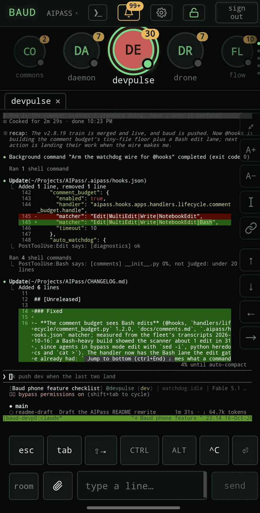
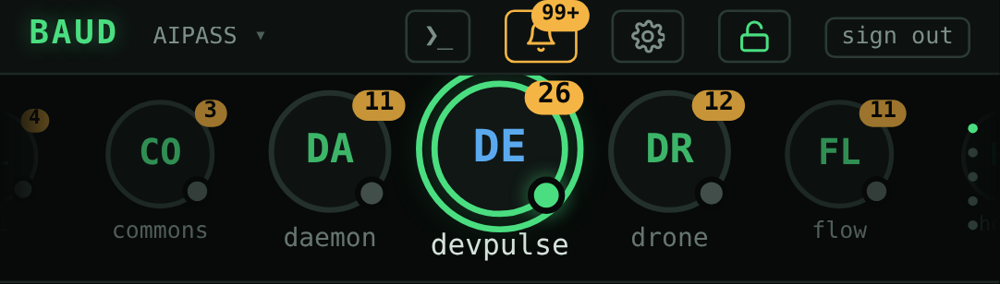

Every project picks up where you left it.
AIPass gives each of your projects an agent that remembers. Switch between them in seconds and nothing has to be explained again.

What it does
-
Many projects, nothing to re-explain.
Open any project and its agent already knows what happened last time: what was decided, what is half done, what comes next. Move between projects all day and keep the thread in every one.
-
Drop it into a repo you already have.
Adding AIPass to a project adds an agent with persistent memory and an organized workspace beside your code. Nothing in the project moves. Or start a new project inside AIPass from the first commit.
-
Hand work over, come back later.
Give an agent a long task, walk away, and read what happened when you return.
A Linux box, anywhere
AIPass lives on one Linux box you choose, and that box can be anywhere. A Mac works too. Work on it from a terminal, or pair your phone through BAUD and take it with you.
- Your Linux laptop
- Windows, through WSL2
- A Mac
- A container
- A cloud VM
- A headless server
- Your phone, through BAUD
Want it sandboxed? Run it in a container. The install page shows how.
Built on AIPass: BAUD
BAUD puts your AIPass machine on your phone. See which agents are working, open a live session and type into it, and check the machine itself, served from your own machine over your own Tailscale network.

Build on it
AIPass is open source under the MIT license. The hard parts are already there and tested: memory that lasts, agents that hand each other work, clients for outside providers. Build your own app on top of it, the way BAUD is, or borrow the pieces for something separate.
Want to know how something works inside? Read the repo, or install it and ask the agent on your machine.
Where it's heading
Direction, not what ships today.
- Toward an operating system for agents: a place they live and work, beside the one you do.
- More apps built on it, the way BAUD is.
- BAUD on the desktop as well as the phone.
- A sandboxed install in one command, through a ready container.
Questions
Which AI coding tool does it use?
Claude Code, on a Claude plan that includes it. AIPass runs the same Claude Code you would run yourself. The core needs no API key.
What does it run on?
Linux, every day, and macOS, tested in CI. On Windows, install it inside WSL2. It also runs in a container, or on a headless machine you reach from your phone.
Is it free?
Yes. AIPass is open source under the MIT license. You pay for your own Claude plan and nothing else.
How is it different from agent frameworks?
It is not a library you write code against. It is a workspace you install beside your projects, and the agents come already configured. You talk to them in Claude Code, the way you already work.
Install it
$ pipx install aipass
$ aipass installYou need Python 3.10 or newer, Claude Code, and Linux, macOS or WSL2. The install page has the details.